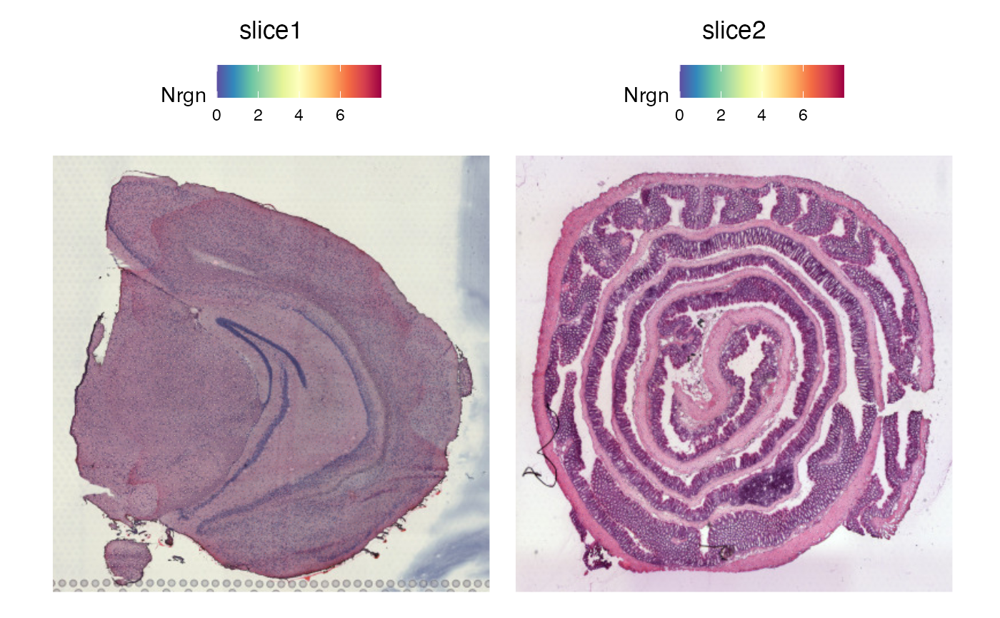

Update a Seurat object created with semla for compatibility with Seurat's spatial functions
UpdateSeuratFromSemla.RdUpdate a Seurat object created with semla for compatibility with Seurat's spatial functions
Examples
library(semla)
# Load example Visium data
se_mbrain <- readRDS(system.file("extdata/mousebrain", "se_mbrain", package = "semla"))
se_mcolon <- readRDS(system.file("extdata/mousecolon", "se_mcolon", package = "semla"))
se_merged <- MergeSTData(se_mbrain, se_mcolon)
# Update object
se_merged <- UpdateSeuratFromSemla(se_merged)
#>
#> ── Adding @images data from Staffli object
#>
#> ℹ Loading images
#> ℹ Converting raw coordinates
#> ℹ Converting scale factors
#> ℹ Creating VisiumV1 slices
#> ℹ Storing VisiumV1 slices in @images slot
#>
#> ✔ Returning updated Seurat object.
# Use Seurat functions
SpatialFeaturePlot(se_merged, features = "Nrgn")

# Transform images in object
se_merged <- LoadImages(se_merged)
#>
#> ── Loading H&E images ──
#>
#> ℹ Loading image from /private/var/folders/8r/bfm2m_q17znfk0m_8dt330tm0000gp/T/Rtmp8oqdQg/temp_libpath56b417ee1027/semla/extdata/mousebrain/spatial/tissue_lowres_image.jpg
#> ℹ Scaled image from 600x565 to 400x377 pixels
#> ℹ Loading image from /private/var/folders/8r/bfm2m_q17znfk0m_8dt330tm0000gp/T/Rtmp8oqdQg/temp_libpath56b417ee1027/semla/extdata/mousecolon/spatial/tissue_lowres_image.jpg
#> ℹ Scaled image from 541x600 to 400x444 pixels
#> ℹ Saving loaded H&E images as 'rasters' in Seurat object
rotation_angle <- get_array_rotation(se_merged, grid_pattern = "hexagonal")
#> ℹ Finding rotation angle for sample 1
#> → Scaling array coordinates
#> → Scaling pixel coordinates
#> → Running Kabsch algorithm
#> → The rotation angle between the array and pixel coordinates is 0.101 degrees
#> ℹ Finding rotation angle for sample 2
#> → Scaling array coordinates
#> → Scaling pixel coordinates
#> → Running Kabsch algorithm
#> → The rotation angle between the array and pixel coordinates is 0.254 degrees
transforms <- rbind(generate_rigid_transform(sampleID = 1L, angle = rotation_angle$`1`),
generate_rigid_transform(sampleID = 2L, angle = 12))
se_merged <- RigidTransformImages(se_merged, transforms = transforms)
#>
#> ── Transforming images ──
#>
#> ℹ Found transformations for sample(s): 1, 2
#> ℹ Transforming image 1
#> ℹ Fetched spot coordinates
#> ℹ Supplied transformations are valid
#> → Mirror along x-axis: FALSE
#> → Mirror along y-axis: FALSE
#> → Rotation angle: 0.1
#> → Translation along x axis: 0%
#> → Translation along y axis: 0%
#> → Scaling factor: 1
#> ✔ Returning transformed image
#> ℹ Transforming image 2
#> ℹ Fetched spot coordinates
#> ℹ Supplied transformations are valid
#> → Mirror along x-axis: FALSE
#> → Mirror along y-axis: FALSE
#> → Rotation angle: 12
#> → Translation along x axis: 0%
#> → Translation along y axis: 0%
#> → Scaling factor: 1
#> ✔ Returning transformed image
#> ℹ Image transformation complete.
# Update object
se_raw <- UpdateSeuratFromSemla(se_merged, image_use = "transformed")
#>
#> ── Adding @images data from Staffli object
#>
#> ℹ Loading transformed raster
#> ℹ Converting transformed coordinates
#> ℹ Converting scale factors
#> ℹ Creating VisiumV1 slices
#> ℹ Storing VisiumV1 slices in @images slot
#>
#> ✔ Returning updated Seurat object.
se_transformed <- UpdateSeuratFromSemla(se_merged, image_use = "raw")
#>
#> ── Adding @images data from Staffli object
#>
#> ℹ Loading images
#> ℹ Converting raw coordinates
#> ℹ Converting scale factors
#> ℹ Creating VisiumV1 slices
#> ℹ Storing VisiumV1 slices in @images slot
#>
#> ✔ Returning updated Seurat object.
# Use Seurat functions
p1 <- SpatialFeaturePlot(se_raw, features = "Nrgn")
p2 <- SpatialFeaturePlot(se_transformed, features = "Nrgn")
p1 | p2